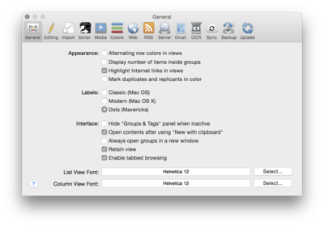

|

Use the General tab to set the general settings for the user interface.
Appearance
These options define some parts of the visual appearance.
-
Alternating row colors in views: Check to color every second row in item lists differently.
-
Display number of items inside groups: Check to show the number of unread and read documents contained in a group. Number will appear in parenthesis after group names. If this option is unchecked, news feed still show the number of unread items.
-
Highlight Internet links in views: Check to show link documents marked in blue and underlined in item lists.
-
Mark duplicates and replicants in color: Check to highlight duplicates marked in blue and replicants marked in red in most views. When unchecked duplicates and replicants are marked with file property icons.
Labels
Choose how you would like labels to be shown in lists.
-
Classic: Tints the group/document icon (like on Mac OS 9).
-
Modern: Puts the group/document name in a colored bubble (like on older versions of OS X).
-
Dots: Shows a colored dot in the list (like on OS X Mavericks).
Interface
These options define some parts of how you interact with the user interface.
-
Hide 'Groups & Tags' panel when inactive: Check to hide the Groups panel in applications other than DEVONthink Pro Office.
-
Open contents after using 'New with Clipboard': Check to let DEVONthink Pro Office switch to newly added items after adding them using
Data > New > With Clipboard
or via the
Dock menu
.
-
Always open groups in a new window: When checked, double-click a group to open it in a separate window. When unchecked, double-click the group to make it the new root of the current window. Use
Go > Top Group and Go > Enclosing Group
to go up the groups hierarchy again.
-
Retain view: When the above option, Always open groups in a new window, is unchecked, the actual view settings are maintained when you navigate the group structure instead of the group's individual settings being applied.
-
Enable tabbed browsing: When checked, click with ⌘ pressed a link in web, PDF or text views to open it in a new tab. When unchecked or the ⌘ modifier key isn't pressed, documents are opened in the same view, in the default application or in new windows.
Fonts
Use List Views Font and Column View Font to set the font DEVONthink Pro Office uses for displaying item lists in list and column views.
|
Note: Hold the ⌥Option key to restore the default fonts.
|
|